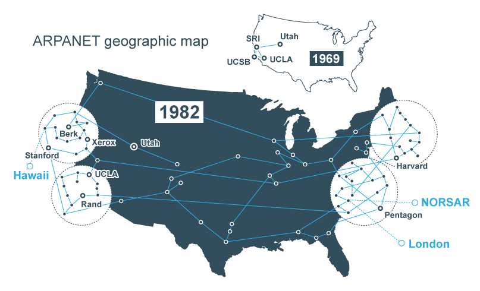

Lesson 2 - Internet Issues
At the end of this lesson, you will be able to:
- Identify the communities of people who control how the Internet works.
- Describe 3 different societal issues: net neutrality, internet censorship, and the digital divide.
Who owns the internet?
Some people think that nobody's in charge of the internet—that everyone just cooperates freely with no central organization. It's true that free cooperation plays an important role, but people can't just pick any IP address or hostname they want, or else there would be conflicts.
Until 2009, the internet domain name (website names) hierarchy was entirely controlled by the United States government, with the details delegated to ICANN (the Internet Corporation for Assigned Names and Numbers).
More details on ICANN agreement
In 2009 the US Department of Commerce signed a new agreement with ICANN recognizing it as an independent, multinational organization, although it is still under contract with the Department of Commerce to maintain certain principles. International critics are still not satisfied that ICANN is truly independent of the United States.
The growth of the internet has been fueled by open protocols, standards that are not owned by a company.
Examples of open protocols:
- Standards for sharing information and communicating between browsers and servers on the Web
- Standards for packets and routing information
The protocols for the internet change over time. The Internet Engineering Task Force (IETF) are the experts in charge of developing and approving these protocols.
More details on IETF
The work of the IETF is done largely by email, and anyone with the necessary expertise can join the mailing lists. Decisions are made by consensus (everyone has to agree to a change), never by voting. The idea is that if a proposal is controversial enough to need a vote, then it should be improved until everyone's objections are satisfied. Unlike ICANN, the IETF has been remarkably free from political pressure, even though it, too, has historically been dominated by experts from the United States. The Internet Society (ISOC) is a worldwide nonprofit membership society that anyone can join, for free. It is now officially in charge of the IETF and also conducts education and promotes government policies supporting an open internet.
If you think it's strange for one country to control a worldwide network, you're not alone. Other countries have never been happy about the US control of the internet, which was officially under US control until 2009 and is still, according to many critics, unofficially dominated by the US government.
For example, until 2009, all DNS domain names had to use the English alphabet, despite constant requests to accommodate other languages.
The issue of US control has become much more heated since 2013 when Edward Snowden exposed the US National Security Agency (NSA) for spying on internet traffic worldwide. It's too soon to know how these concerns will eventually be resolved.
How did the US end up in charge?
In 1968, the Advanced Research Projects Agency (ARPA) of the US Department of Defense announced that they were developing a large-scale packet-switched network. In 1969, the first connections were made among four university research groups. At its peak, the ARPANET reached a few hundred computers. (All those computers were owned either by military installations or by computer science research labs, mostly at universities.)

The ARPANET was tiny, but it inspired the protocols that became the foundation of the internet. And it belonged to the US military.
Once IP was invented in 1982, the ARPANET became just one network among many, and it was decommissioned in 1990. And in 1981, the National Science Foundation (NSF, a civilian agency of the US government that also funded the development of this curriculum) had built the core of a new cross-country network. At that time, businesses still weren't allowed on the network, but there was a clear demand. So, commercial IP-based networks were created.
Societal issues
There are many societal issues with the internet, some are related to people taking advantage of the open protocols that make the internet function and present us with tricky dilemmas. We will learn about protocols later in this unit.
For example, there are three major issues to think about:
- Net Neutrality - A raging legal debate about the principle that internet service providers should enable access to all content and applications regardless of the source, and without favoring or blocking particular products or websites.
More details on Net Neutrality
Internet users love services like streaming movies, video chatting, or online gaming. All of this content needs to travel over the internet, however, and the companies that build and maintain networks are complaining about the increased demands being placed on their networks.
"How the end of net neutrality could change the internet" (video)
"'Net Neutrality' is ending. Here's how your internet could change" (article)
- Internet Censorship - The attempt to control or suppress what can be accessed, published, or viewed on the internet by certain people. This can be used to protect people (i.e. to not allow access to child pornography), but can also be used to limit free speech.
More details on Internet Censorship
While the internet is used to share many useful services and information, there are growing concerns about the way that the internet can be used to spread damaging information ranging from national secrets to calls for violence. Censoring this information may provide some people with increased security, but potentially risks free speech and the safety of social and political activists.
"Free Speech Or Hate Speech: When Does Online Hate Speech Become A Real Threat?" (audio article)
"Internet Censorship Explained" (video)
- Digital Divide - While technology is increasingly integrated into daily life, there are still many who lack access to the internet or digital technology. In rural areas, there are challenges building networks to connect geographically sparse populations, but even in cities some groups or areas have relatively less access to the internet or knowledge of how to use it.
More details on the Digital Divide
While technology is increasingly integrated into daily life, there are still many who lack access to the internet or digital technology. In rural areas, there are challenges building networks to connect geographically sparse populations, but even in cities some groups or areas have relatively less access to the internet or knowledge of how to use it.
"Eliminating the Digital Divide" (video)
"Internet/Broadband Fact Sheet" (article)
Check for understanding!
To have an informed opinion, it helps to understand the technical underpinnings of how the internet works. Let's start!